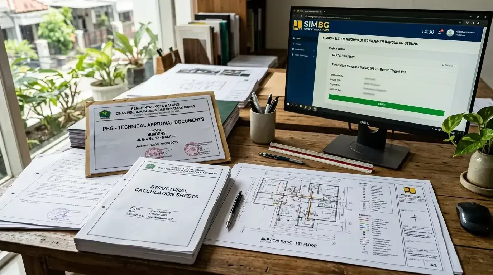

Ringkasan Inti
- Pengurusan izin bangunan PBG di Malang Raya kini 100% tersentralisasi secara daring lewat portal SIMBG nasional.
- Kelengkapan dokumen teknis arsitektur, perhitungan struktur, dan MEP menjadi kunci utama kelolosan verifikasi awal.
- Perbaikan catatan revisi verifikator yang ditindaklanjuti cepat dapat memangkas waktu penerbitan izin hingga 50%.
- Kolaborasi bersama arsitek berlisensi menjamin kesesuaian berkas teknis dengan peraturan zonasi dan RTRW Malang.
Daftar Isi Artikel
Sejak berlakunya Peraturan Pemerintah (PP) Nomor 16 Tahun 2021, istilah Izin Mendirikan Bangunan (IMB) telah resmi digantikan oleh Persetujuan Bangunan Gedung (PBG). Di Kota Malang maupun Kabupaten Malang, seluruh permohonan legalitas wajib diproses secara digital melalui Sistem Informasi Manajemen Bangunan Gedung (SIMBG). Memahami alurnya dengan benar akan menghindarkan Anda dari birokrasi berbelit.
Tahapan Mengurus Izin Bangunan Lewat SIMBG Tanpa Ribet
Mengurus izin bangunan PBG di Malang secara mandiri maupun didampingi konsultan arsitek dapat berjalan cepat asalkan seluruh dokumen administratif dan gambar teknis telah memenuhi standarisasi Kementerian PUPR sebelum tombol unggah ditekan.
Alur tahapan praktis yang wajib dilalui pada portal SIMBG:
- Pembuatan Akun Pemohon: Daftarkan akun perorangan atau badan hukum pada situs resmi simbg.pu.go.id menggunakan NIK dan alamat email aktif.
- Pengisian Data Proyek dan Lahan: Masukkan lokasi koordinat geografis persil tanah, Nomor Objek Pajak (NOP PBB), serta fungsi bangunan (rumah tinggal tunggal, deret, atau komersial).
- Unggah Berkas Administratif dan Dokumen Teknis: Unggah file PDF gambar arsitektur, kalkulasi struktur fondasi, serta gambar skematik utilitas sanitasi dan kelistrikan.
- Verifikasi Dokumen oleh Dinas PUPR Malang: Petugas verifikator daerah memeriksa kelengkapan format berkas dan kesesuaian Garis Sempadan Bangunan (GSB).
- Sidang Konsultasi Teknis (TPT/TPA): Untuk bangunan bertingkat atau kompleksitas tertentu, arsitek memaparkan keselamatan struktur di hadapan tim penilai teknis.
- Penerbitan SKRD dan Pembayaran Retribusi: Setelah berkas disetujui, bayar retribusi ke bank daerah rekanan untuk kemudian Surat PBG diterbitkan secara digital.

Dokumen Persyaratan Wajib Sebelum Mengajukan SIMBG
Kegagalan pengajuan SIMBG umumnya terjadi bukan karena sistem yang lambat, melainkan akibat dokumen pemohon yang tidak lengkap atau tidak sesuai format regulasi tata ruang wilayah Malang.
Pastikan Anda menyiapkan daftar dokumen krusial berikut:
- Bukti Kepemilikan Hak Atas Tanah: Sertifikat Hak Milik (SHM) atau Sertifikat Hak Guna Bangunan (SHGB) yang masih berlaku atas nama pemohon atau dilengkapi surat perjanjian sewa/izin pemanfaatan lahan.
- Keterangan Rencana Kota (KRK) / Informasi Tata Ruang (ITR): Dokumen kesesuaian rencana tata ruang yang memuat batas KDB (Koefisien Dasar Bangunan), KLB, KDH, dan sempadan jalan.
- Gambar Arsitektur Lengkap (DED): Denah lantai, tampak depan-samping-belakang, potongan memanjang dan melintang, rencana atap, serta pola sanitasi.
- Spesifikasi Teknis dan Perhitungan Struktur: Rencana fondasi tapak/bored pile, detail pembesian sloof, kolom praktis, balok latei, dan laporan penyelidikan tanah sondir jika bangunan 2 lantai ke atas.
- Surat Pernyataan Keandalan Gedung: Surat komitmen pemilik untuk mematuhi kaidah keselamatan, ketahanan api, dan kenyamanan lingkungan sekitar.
Catatan Arsitek Malang
Jangan pernah memulai pekerjaan galian fondasi atau memasang bouwplank di lapangan sebelum status akun SIMBG Anda mencapai tahap penerbitan Surat PBG resmi. Dinas Perumahan dan Kawasan Permukiman (Disperkim) serta Satpol PP Malang rutin melakukan operasi penertiban fisik yang berpotensi menyegel proyek dan menjatuhkan denda administratif hingga 10% dari nilai bangunan.
Langkah Menangani Dokumen yang Mendapat Catatan Revisi Verifikator
Mendapatkan catatan revisi dari verifikator SIMBG adalah hal lumrah dalam proses validasi teknis. Sikap proaktif dan pemahaman teknis dalam menanggapi catatan tersebut menentukan kelancaran perizinan Anda:
- Cermati Lembar Catatan Verifikator: Buka tab status permohonan dan pelajari setiap poin revisi secara detail, apakah terkait ukuran dimensi sempadan, notasi gambar, atau format kop gambar arsitektur.
- Koordinasi Bersama Tim Arsitek Perancang: Serahkan catatan teknis kepada arsitek Anda agar revisi gambar CAD/BIM disesuaikan persis dengan permintaan dinas tanpa mengubah esensi tata ruang yang Anda inginkan.
- Unggah Ulang Sesuai Tenggat Waktu: Portal SIMBG memberikan batas waktu perbaikan berkas. Segera unggah dokumen yang telah direvisi agar nomor antrean verifikasi Anda tidak hangus.
Estimasi Waktu Proses dan Biaya Retribusi PBG Malang
Jika berkas perencanaan telah disiapkan secara komplit bersama konsultan arsitek berlisensi sejak awal, verifikasi teknis SIMBG rata-rata memakan waktu 10 hingga 21 hari kerja hingga Surat Ketetapan Retribusi Daerah (SKRD) terbit.
Besaran nilai retribusi PBG dihitung secara transparan berdasarkan formula baku Peraturan Daerah Kota/Kabupaten Malang, meliputi perkalian luas bangunan, indeks lokalitas, indeks fungsi hunian, serta koefisien tingkat lantai. Nilai ini disetorkan langsung ke kas daerah melalui virtual account bank resmi, sehingga bebas dari pungutan liar.
FAQ (Pertanyaan Sering Diajukan)
Apakah pengurusan izin bangunan lewat SIMBG bisa dilakukan tanpa arsitek?
Secara regulasi SIMBG menuntut dokumen teknis berstandar DED yang ditandatangani oleh Tenaga Ahli Arsitektur dan Struktur yang memiliki STRA / SKA. Bantuan konsultan arsitek berlisensi sangat diperlukan agar berkas tidak ditolak berulang kali oleh tim penilai teknis Dinas PUPR.
Apakah ada biaya untuk mengajukan izin bangunan melalui SIMBG?
Pendaftaran pada portal SIMBG tidak dipungut biaya sistem. Namun pemohon wajib melunasi Retribusi PBG resmi ke kas daerah Pemkot atau Pemkab Malang yang besarannya dihitung berdasarkan indeks luas lantai dan fungsi bangunan setelah verifikasi teknis disetujui.
Apakah proses SIMBG bisa dipantau secara real-time oleh pemohon?
Bisa. Pemohon dapat masuk ke dashboard akun SIMBG kapan saja untuk melihat status dokumen, jadwal sidang tim penilai teknis (TPT), rincian catatan revisi, hingga penerbitan Surat Ketetapan Retribusi Daerah (SKRD).
Butuh Bantuan Pengurusan Izin PBG / SIMBG Malang?
Tim arsitek berlisensi IAI Arsitek Malang siap menyusun gambar DED lengkap, perhitungan struktur, dan mendampingi proses SIMBG hingga tuntas.

Muhammad Musyaffa
Penulis & Tim Riset Arsitektur Maroon Arsitek Malang, spesialis asistensi legalitas izin PBG/SIMBG, kesesuaian tata ruang, dan penyusunan dokumen teknis arsitektur di wilayah Malang Raya.